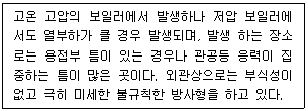

에너지관리기능장 (2006-07-16 기출문제)
1과목: 임의 구분
1. 증기와 응축수의 열역학적 특성으로 작동하는 트랩은?
- 디스크 트랩
- 하향버켓트랩
- 벨로즈 트랩
- 플로트 트랩
(정답률: 88%)

2. 보온관의 열 관류율이 5.0kcal/m2·h, 도관 1m당 표면적이 0.1m2, 관 길이가 50m, 내부 유체 온도 120도 외부 공기 온도 20도 보온 효율 80%일 때 보온관의 열손실은?
- 350kcal/h
- 480kcal/h
- 500kcal/h
- 530 kcal/h
(정답률: 54%)
3. 연료의 연소시 과잉 공기량을 옳게 설명한 것은?
- 실제 공기량과 같은 값이다.
- 실제 공기량에서 이론 공기량을 뺀 값이다.
- 이론 공기량에서 실제 공기량을 뺀 값이다.
- 이론 공기량과 실제 공기량을 더한 값이다.
(정답률: 85%)
4. 다음 설명에 해당 되는 보일러 손상 종류는?

- 가성 취하
- 내부 부식
- 블리스터
- 라미네이션
(정답률: 88%)
5. 보일러를 6개월 이상 장기간 휴지 하는 경우 어떤 보존 방법이 좋은가?
- 만수 보존법
- 청관 보존법
- 소다 만수 보존법
- 건조 보존법
(정답률: 91%)
6. 포화 증기의 온도가 485k 일 때 과열도가 30℃ 라면 이 증기의 실제 온도는 몇도 인가?
- 182℃
- 212℃
- 242℃
- 272℃
(정답률: 60%)
7. 유속이 일정한 장소에 설치하여 유체의 전압과 정압의 차이를 측정하고 그 값으로 속도 수두 및 유량을 계산하는 것은?
- 와류식 유량계
- 피토관식 유량계
- 유속식 유량계
- 차압식 유량계
(정답률: 60%)
8. 지름이 100mm에서 지름이 200mm로 돌연 확대되는 관에 물이 0.04m3/sec의 유량이 흐르고 있다. 이때 돌연 확대에 의한 손실수두는?
- 0.32m
- 0.53m
- 0.75m
- 1.28m
(정답률: 45%)
9. 보일러 급수 중의 가스 제거 방법에 대해서 설명한 것 중 틀린 것은?
- 용존 가스 제거 방법은 기폭법, 탈기법 등이 있다.
- 탈기에 의한 방법은 산소, 탄산가스 등을 제거 하는 경우에 쓰인다.
- 기폭에 의한 방법은 산소, 탄산가스 등은 제거 하나 철분, 망간을 제거 하지는 못한다.
- 기폭에 의한 처리 방법은 보통 급수를 분무 또는 탑상에서 우화 시키는 방법을 취하고 있다.
(정답률: 82%)
10. 강관 밴더기에 관한 설명으로 잘못된 것은?
- 램(ram)식은 현장용으로 많이 쓰인다.
- 로터리 (rotary )식 사용시에는 관의 단면 변형이 없고 강관, 스테인레스관, 동관도 벤딩이 가능하다.
- 램식은 관속에 모래를 채우는 대신 심봉을 넣고 벤딩을 한다.
- 공장에서 동일 모양의 벤딩 제품을 다량 생산할 때 적합한 것은 로터리식이다.
(정답률: 88%)
11. 증기 난방법 종류에서 응축수 환수 방식에 의한 분류에 해당 되지 않는 것은?
- 기계 환수식
- 중력 환수식
- 진공 환수식
- 저압 환수식
(정답률: 91%)
12. 어떤 보일러의 원심식 급수 펌프가 2,500rpm으로 회전하여 200m3/h 유량을 공급한다고 한다. 이 펌프를 1,500rpm 으로 회전 시키면 공급 되는 유량은?
- 100m3/h
- 120m3/h
- 140m3/h
- 160m3/h
(정답률: 71%)
13. 액체 연료인 중유의 유동점은 응고점 보다 몇도 정도 더 높은가?
- 10℃
- 5℃
- 2.5℃
- 1℃
(정답률: 65%)
14. 탄산마그네슘(MGCO2) 보온재의 설명으로 잘못된 것은?
- 염기성 탄산마그네슘에 석면을 8~15% 정도 혼합한 것이다.
- 안전 사용 온도는 무기질 보온재중 가장 높다.
- 석면의 혼합 비율에 따라 열전도율은 달라진다.
- 물반죽 또는 보온판, 보온통 형태로 사용된다.
(정답률: 86%)
15. 두게 3cm 면적 2m2인 강판의 열전도량을 6,000kcal/h로 하려면 강판 양면의 필요한 온도차는?
- 2℃
- 2.5℃
- 3℃
- 3.5℃
(정답률: 56%)
16. 내화물의 내화도 측정에 사용되는 온도계는?
- 알코올 온도계
- 수은 온도계
- 제겔콘 온도계
- 습구 온도계
(정답률: 84%)
17. 보일러의 압력계 부착 방법 설명으로 잘못된 것은?
- 압력계와 연결된 증기관은 동관일 경우 안지름 6.5m이상 이어야 한다.
- 증기 온도가 210℃를 넘을때에는 황동관 또는 동관을 사용 하여서는 안 된다.
- 압력계 에는 물을 넣은 안지름 12.7mm 이상의 사이폰관을 설치한다.
- 압력계의 콕 대신에 밸브를 사용할 경우에는 한눈으로 개폐 여부를 알 수 있는 구조로 한다.
(정답률: 63%)
18. 검사 대상기기인 보일러의 검사 종류 중 검사 유효 기간이 1년인 것은?
- 구조 검사
- 제조 검사
- 용접 검사
- 계속 사용 안전 검사
(정답률: 92%)
19. 높이가 2m 되는 뚜껑이 없는 용기 안에 비중이 0.8인 기름이 가득차 있다면 밑면의 압력은? (단, 물의 비중량은 1,000kg f/m3)
- 1,600kg f/cm2
- 16kg f/cm2
- 1.6kg f/cm2
- 0.16kg f/cm2
(정답률: 60%)
20. 보일러 스케일과 관계가 없는 성분은?
- 황산염
- 규산염
- 칼슘염
- 인산염
(정답률: 63%)
2과목: 임의 구분
21. 보일러 및 열 교환기용 탄소 강관의 KS 규격 기호는?
- STBH
- STHA
- STS-TB
- SPPH
(정답률: 69%)
22. 폐열 보일러에 대한 설명 중 잘못된 것은?
- 여러가지 다른 노나 가스 터빈 등에서 나오는 폐가스가 갖고 있는 에너지를 열원으로 한 것이다.
- 분진 등에 의한 전열면의 오손이 심할 경우가 있다.
- 가스의 흐름, 수관의 피치, 노벽의 구조, 매연 분출기의 배치 등을 적절히 할 필요가 있다.
- 폐열의 열량이 낮으므로 연료비가 많이 든다.
(정답률: 90%)
23. 기체의 정압 비열과 정적 비열의 관계를 옳게 설명한 것은?
- 정압비열이 적적 비열보다 항상 작다.
- 정압 비열이 정적비열 보다 항상 크다.
- 기체에 따라 다르다.
- 정압비열과 정적 비열은 거의 같다.
(정답률: 88%)
24. 강철제 유류용 보일러의 용량이 얼마 이상이면 공급 연료량에 따라 연소용 공기를 자동 조절하는 장치를 갖추어야 하는가? (단, 난방 및 급탕 겸용 보일러임)
- 2T/H
- 5T/H
- 10T/H
- 20T/H
(정답률: 83%)
25. 다음 중 증기 트랩의 구비조건 설명으로 틀린 것은?
- 유체의 마찰 저항이 클 것
- 내식성과 내구성이 있을 것
- 공기 빼기가 양호 할 것
- 봉수가 유실되지 않는 구조 일 것
(정답률: 92%)
26. 배관 지지구 중 펌프, 압축기 등에서 발생하는 기계의 진동, 수격작용 등에 의한 각종 충격을 억제 하는데 사용되는 것은?
- 브레 이스
- 행거
- 리스트레인트
- 서포트
(정답률: 85%)
27. 충동식 증기 트랩에 관한 설명으로 틀린 것은?
- 작동시 증기가 약간 새는 결점이 있다.
- 종류로는 디스크 트랩, 오리피스 트랩 등이 있다.
- 응축수의 양에 비하여 크기가 큰 편이다.
- 고압, 중압, 저압의 어느 곳에나 사용 가능하다.
(정답률: 39%)
28. 1kg의 습포화증기 속에 증기상 이 x kg 포함되어 있을 때 습도는?
- x-1
- 1-x
- X /(1-x)
- X
(정답률: 71%)
29. 배기가스 중의 산소 농도를 측정하여 공기비를 측정하는 경우 일반적으로 공기비=21/(21 (산소농도))의 식을 이용하고 있다. 이식에서 (산소농도)에 대한 설명으로 옳은 것은?
- 습배기 가스 중의 산소 중량 %
- 습배기 가스 중의 산소 체적 %
- 건배기 가스 중의 산소 중량 %
- 건배기 가스 중의 산소 체적 %
(정답률: 62%)
30. 보일러 수의 청관제약품 중 슬러지 조정제로만 되어 있는 것은?
- 리그린, 텍스트린, 탄닌
- 수산화나트륨, 탄산나트륨, 히드라진
- 아황산나트륨, 인산나트륨, 암모니아
- 질산나트륨, 황산나트륨, 초산나트륨
(정답률: 72%)
31. 보일러 부속 장치 중 고온부식이 유발될 수 있는 장치는?
- 절탄기
- 과열기
- 응축기
- 공기 예열기
(정답률: 82%)
32. 다음 중 열역학 제2법칙과 관련된 설명은?
- 외부에서 어떤 일을 하지 않고는 저온부에서 고온부로 열을 이동시킬 수 없다.
- 밀폐가 임의의 사이클을 이룰 때 전달되는 열량의 총합은 행하여진 열량의 총합과 같다.
- 열은 본질상 에너지의 일종이며, 열과 일은 서로 전환이 가능하고 ,이때 열과 일 사이에는 일정한 비례관계가 성립 한다.
- 에너지는 단지 다른 형태로 변화될 수 있지만 창조나 소멸은 되지 않는다.
(정답률: 80%)
33. 보일러 의 열손실중 최대인 것은?
- 배기가스에 의한 손실
- 불완전연소에 의한 손실
- 방열에 의한 손실
- 그을음에 의한 손실
(정답률: 86%)
34. 유리 섬유보온재의 특성 설명으로 잘못된 것은?
- 사용 온도가 -25 ~ 300eh 이다
- 섬유가 가늘고 섬세하게 밀집되어 다량의 공기를 포함 하고 있으므로 보온효과가 좋다.
- 순수한 유기질의 섬유제품으로서 불에 타지 않는다.
- 가볍고 유연하여 작업성이 좋으며 , 칼이나 가위로 쉽게 절단 되므로 작업이 용이하다.
(정답률: 80%)
35. 보일러 증기 압력이 상승할 때의 상태 변화 설명으로 잘못된 것은?
- 포화 온도가 상승한다.
- 증발잠열이 증가 한다.
- 포화수의 비중이 작아진다.
- 증기 엔탈피가 증가 한다.
(정답률: 54%)
36. 연강용 피복 아크 용접봉 심선의 5가지 주요 화학성분 원소는?
- C, Si, Mn, P, S
- C, Si, Fe, N, H
- C, Si, Ca, N, H
- C, Si, Pb, N, H
(정답률: 91%)
37. 보일러 저온 부식의 원인이 되는 것은?
- 과잉공기 중의 질소 성분
- 연료중의 바나듐 성분
- 연료 중의 유황 성분
- 연료의 불완전 연소
(정답률: 79%)
38. 다음 중 보온재의 보온 효과가 증가 하는 경우는?
- 보온재의 온도가 상승 하는 경우
- 보온재의 열전도율이 커지는 경우
- 보온재의 비중이 커지는 경우
- 연료의 불완전 연소
(정답률: 43%)
39. 노통연관식 보일러에서 노통의 상부가 압궤가 되는 주된 요인은?
- 수처리 불량
- 저수위 차단 불량
- 연소실 폭발
- 과부하 운전
(정답률: 85%)
40. 보일러 에서 2차 연소란 무엇인가?
- 미연가스가 연소실 이외의 연도 에서 다시 연소하는 것이다.
- 미연가스가 연소실 내의 후부 에서 재 연소 하는것이다.
- 완전 연소 하기 어려운 연료를 2번 연소 시키는 것이다.
- 불완전 연소 가스가 연소실에서 재 연소 하는 것이다.
(정답률: 78%)
3과목: 임의 구분
41. 증기 과열기에 설치된 안전밸브의 취출 압력은 어떻게 조정 되어야 하는가?
- 보일러 본체의 안전밸브와 동시에 취출 되도록 한다.
- 최고 사용 압력 이상에서 취출 되도록 한다.
- 보일러 본체의 안전밸브 보다 늦게 취출 되도록 한다.
- 보일러 본체의 안전밸브 보다 먼저 취출 되도록 한다.
(정답률: 87%)
42. 중유의 연소 성상을 개선하기 위한 첨가제의 종류가 아닌 것은?
- 연소 촉진제
- 착화 지연계
- 슬러지 분산제
- 회분 개질제
(정답률: 89%)
43. 액체열을 가장 옳게 설명 한 것은?
- 임의의 압력하에서 0도의 액체 1kg을 그 압력에 상당하는 포화 온도까지 높이는데 필요한 열량
- 1kg의 액체를 대기압 상태에서 게이지 압력 1kgf/cm2 까지 올리는데 필요한 열량
- 100도의 액체를 대기압 상태에서 포화 온도 까지 올리는데 필요한 열량
- 액체 1kg을 대기압 상태에서 포화 증기로 만드는데 필요한 열량
(정답률: 65%)
44. 각 물질의 연소 반응식을 표시한 것 중 틀린 것은?
- S + O2 = 2SO
- C + O2 = CO2
- H2 +(1/2)O2 =H2O
- C+ (1/2)O2 =CO2
(정답률: 69%)
45. 고온에서 저온으로 열이 이동하는 형태가 아닌 것은?
- 복사
- 전도
- 대류
- 흡열
(정답률: 79%)
46. 저압 증기 보일러 에서 보일러 수가 환수관으로 역류하거나 누출 하는 것을 방지하기 위하여 설치하는 배관 방식은?
- 리프트 피팅 배관
- 하트포드 접속법
- 에어 루프 배관
- 바이패스 배관
(정답률: 86%)
47. 증기 배관에 감압 밸브 설치시 고압측과 저압측의 적합한 압력차의 비는?
- 3 : 1 이내
- 4 : 1 이내
- 5 : 1 이내
- 2 : 1 이내
(정답률: 77%)
48. 보일러에 사용되는 청관제중 탈산소제로 사용되는 것은?
- 히드라진
- 수산화나트륨
- 탄산나트륨
- 암모니아
(정답률: 70%)
49. 자동제어의 종류 중 주어진 목표값과 조작된 결과의 제어량을 비교하여 그 차를 제거하기 위하여, 출력측의 신호를 입력측으로 되돌려 제어 하는 것은?
- 피드백 제어
- 시퀸스 제어
- 인터록 제어
- 가스케이드 제어
(정답률: 88%)
50. 신설 보일러의 소다 끓임 조작시 사용하는 소다의 종류가 아닌 것은?
- 탄산나트륨
- 수산화나트륨
- 질산나트륨
- 제3인산나트륨
(정답률: 63%)
51. 긴관으로만 구성된 보일러로 초임계압력에서도 증기를 얻을 수 있는 보일러는?
- 슈밋트 보일러
- 베록스 보일러
- 라몬트 보일러
- 슐저 보일러
(정답률: 84%)
52. 어떤 강의실의 필요 열량이 5,000kcal/h 이다. 3세주 650mm, 쪽당 방열면적 0.15m2인 방열기를 설치하여 증기난방 할 경우 필요한 쪽수는?
- 46쪽
- 49쪽
- 52쪽
- 56쪽
(정답률: 59%)
53. 일반적으로 급속 연소가 가능하며 ,높은 화염온도를 얻을 수 있고 저칼로리 가스의 연소와 예열 공기의 사용이 곤란한 가스버너는?
- 유도 혼합식 버너
- 내부 혼합식 버너
- 부분 혼합식 버너
- 외부 혼합식 버너
(정답률: 75%)
54. 보일러 안전밸브의 호칭 지름은 25A 이상으로 하나, 보일러 크기나 종류에 따라 20A 이상으로 할 수 있는 보일러도 있는데 이에 해당 되지 않는 것은?
- 최고 사용압력 0.1MPa 이하의 보일러
- 소용량 강철제 보일러
- 전열면적 10m2이하의 보일러
- 최대 증발량 5T/h 이하의 관류 보일러
(정답률: 71%)
55. 어떤 측정법으로 동일 시료를 무한 횟수로 측정하였을 때 데이터 분포의 평균치와 참값과의 차를 무엇이라 하는가?
- 신뢰성
- 정확성
- 정밀도
- 오차
(정답률: 82%)
56. TPM 활동의 기본을 이루는 3정 5S 활동에서 3정에 해당되는 것은?
- 정시간
- 정돈
- 정리
- 정량
(정답률: 61%)
57. 공정 분석기호중 ㅁ 는 무엇을 의미 하는가?
- 검사
- 가공
- 정체
- 저장
(정답률: 71%)
58. 축의 완성지름, 철사의 인장강도, 아스피린순도와 같은 데이터를 관리하는 가장 대표적인 관리도는?
- X-R 관리도
- nP관리도
- C 관리도
- U관리도
(정답률: 64%)
59. PERT에서 Network에 관한 설명 중 틀린 것은?
- 가장 긴 작업시간이 예상 되는 공정을 주공정이라 한다.
- 명목상의 활동은 점선 화살표로 표시 한다.
- 활동은 하나의 생산 작업요소로서 원 으로 표시 한다.
- Nwtwork는 일반적으로 활동과 단계의 상호 관계로 구성된다.
(정답률: 43%)
60. 생산 계획량을 완성 하는데 필요한 인원이나 기계의 부하를 결정하여 이를 현재 인원 및 기계의 능력과 비교하여 조정하는 것은?
- 일정 계획
- 절차 계획
- 공수 계획
- 진도 관리
(정답률: 71%)